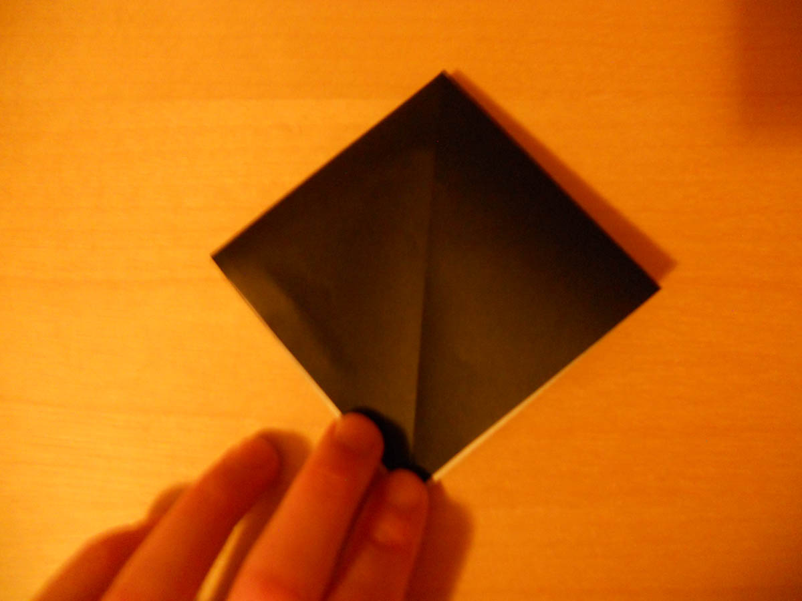
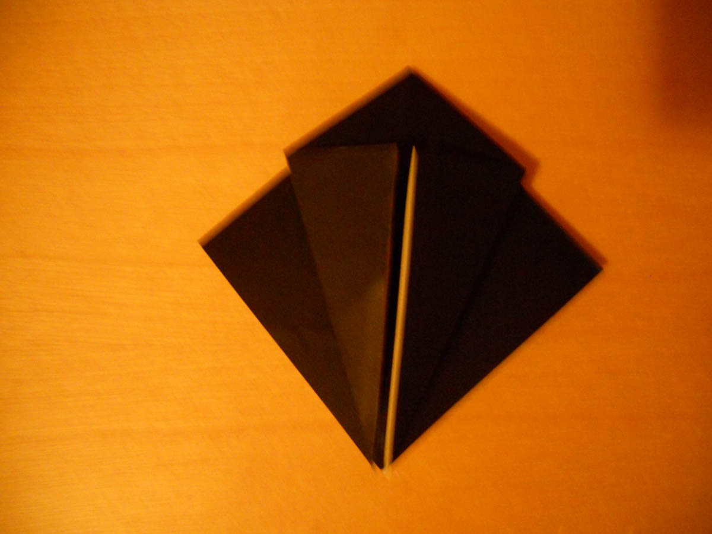
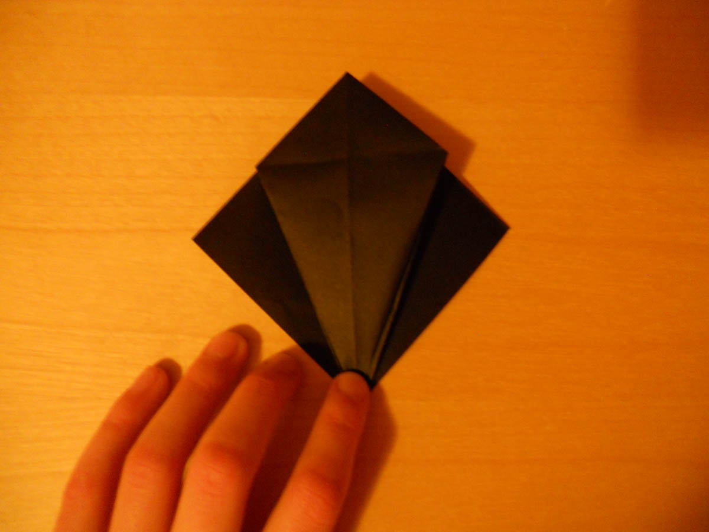
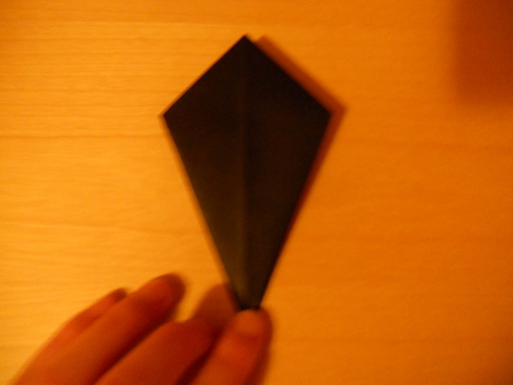
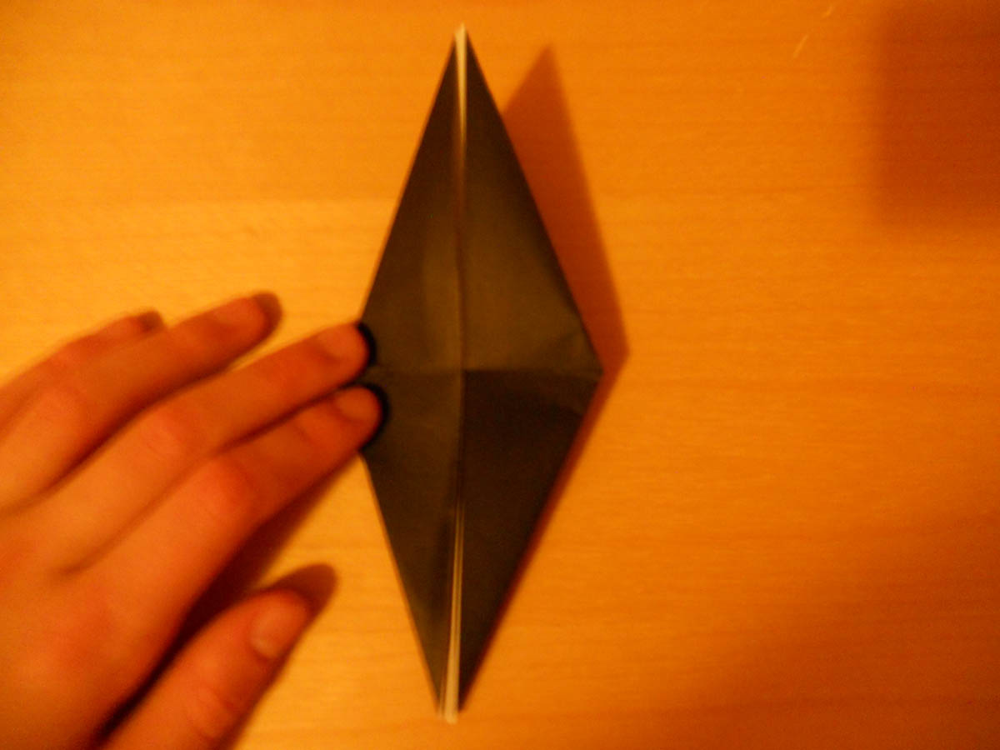

1. Start with a Preliminary base. Click the link if you don't know how to make one.

2. Fold both sides to the center. Unfold.

3. Inside reverse fold on the creases.

4. Repeat step 3 behind.

5. Fold the top flap up. Repeat behind. You're done!